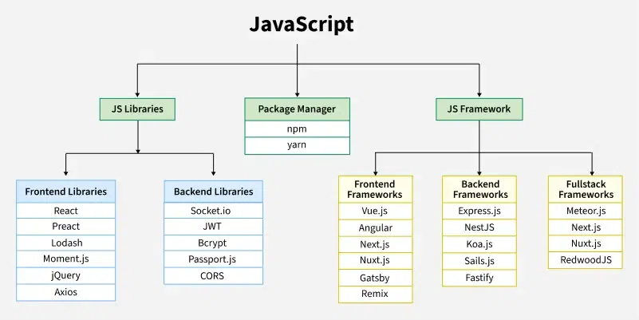

INTRODUCTION
WHAT IS JAVASCRIPTJavaScript is a programming language used to create dynamic content for websites. It is a lightweight, cross-platform, and single-threaded programming language. JavaScript is an interpreted language that executes code line by line providing more flexibility.
HTML adds Structure to a web page, CSS styles it and JavaScript brings it to life by allowing users to interact with elements on the page, such as actions on clicking buttons, filling out forms, and showing animations.
JavaScript on the client side is directly executed in the user's browser. Almost all browsers have JavaScript Interpreter and do not need to install any software. There is also a browser console where you can test your JavaScript code.
JavaScript is also used on the Server side (on Web Servers) to access databases, file handling and security features to send responses, to browsers.

WHY TO LEARN JAVASCRIPT?
1. Versatility: Javascript can be used to develop websities,games,mobile apps and more.
2. Client Side:JavaScript is the main language for client-side logic and is supported by almost all browsers. There is a big list of frameworks and libraries like ReactJS,AngularJS and Vue JS.
3. Server-Side:With runtime environments like NodeJS and Frameworks like Express.Js, JavaScript is now widely used for building server-side applications.
4. Machine Learning: With Libraries like Tensorflow.JS, JavaScript can be used to develop and train machine learning models. Please refer to ML in JS for details.
LIBRARIES AND FRAMEWORKS:
JavaScript libraries and frameworks play a important role in modern web development. They offer built-in functions and methods that enhance web pages, making them more dynamic and interactive. They handle repetitive tasks, allowing developers to focus on core functionality.
Also, they provide project structure and data flow structure that helps to create fast and more reliable applications.

|